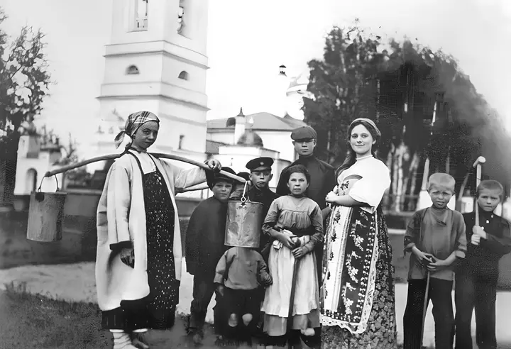

За недолгую, но яркую жизнь, поэт Сергей Есенин прошел путь от обычного деревенского мальчишки до представителя московского и питерского творческого бомонда. Каждый из этапов этого пути полон интересных деталей. Когда родился Сергей Есенин? Автор знаменитых строк «Белая береза под моим окном» родился в 1895 году, 3 октября, в крестьянской семье, проживавший в селе Константиново Рязанской губернии. Между родителями произошел разлад, и двухлетнего Сергея отдали на воспитание бабушке и дедушке в другую деревню. Этот момент можно назвать отправной точкой в его становлении как поэта и личности. В его судьбе сплетается крестьянство и творчество: Трое дядьев, живших с ним, воспитывали в нем мужика — учили косить траву, рубить дрова. Бабушка рассказывала сказки и пела народные песни. Дед каждый вечер читал церковные книги. На стыке этих вселенных вырастал талант Есенина. Писатель и литературовед Сергей Кошечкин в книге «Жизнь Есенина» приводит рассказы друзей Есенина по деревенским забавам. Они отмечали, что Сергей с 8 лет сочинял стихи и частушки, которые пели всем селом, был сильным и бойким, участвовал во всех деревенских драках.
В школе мальчик учился хорошо, но хулиганил. Из-за этого остался на второй год. Какое прозвище было у Сергея Есенина в школе? Поэт носил прозвище Серега Монах. Это связывают с тем, что грамоте Есенин учился по церковным книгам. После Константиновского земского училища он в 1909-м поступил в церковно-учительскую школу. Этот момент стал отправным в становлении его как поэта. Во время учебы он активно пишет стихи. После окончания учительской школы Есенин получил диплом учителя школьной грамоты и переехал в Москву. Поработав в столице с отцом в мясной лавке, устроился в книгоиздательскую типографию «Культура». Он участвовал в распространении запрещенной литературы. В 18 лет поступил вольным слушателем на историко-филологическое отделение Московского народного государственного университета.